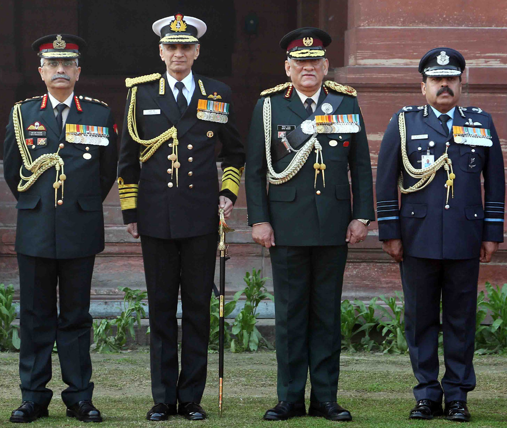

Chief of the Army Star
On 17 December 2016, the Government of India appointed Rawat as the 27th Chief of the Army Staff,
superseding two more senior Lieutenant Generals,Praveen Bakshi and P. M. Hariz.The appointmentmade by NDA ruled Government
was politically controversial.Rawat was accused of nepotism and gratuitously politicising the appointment, by the senior
serving and retired military officers.
He took office of Chief of the Army Staff as the 27th COAS on 31 December 2016, after retirement of General Dalbir
Singh Suhag.He was the third officer from the Gorkha Brigade to become the Chief of the Army Staff, after Sam
Manekshaw and Suhag.
In 2018, Rawat defended the army Major involved in the Kashmir human shield incident, where a Kashmiri man was tied to a
jeep as a human shield. The officer was awarded a Chief of the Army Staff Commendation Card by Rawat for counter-insurgency
operations.
Rawat had been criticized by the opposition party leaders for making political statements during the Citizenship Amendment
Act protests.On his visit to the United States in 2019, General Rawat was inducted to the United States Army Command and General
Staff College International Hall of Fame.He was also an honorary General of Nepalese Army in accordance with the tradition
between the Indian and Nepali armies to confer the honorary rank of General upon each other's chiefs to signify their close and
special military ties.Rawat served as the 57th Chairman of the Chiefs of Staff Committee.